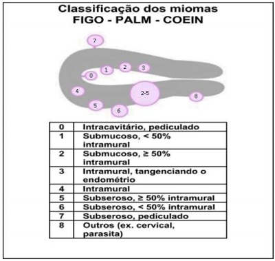
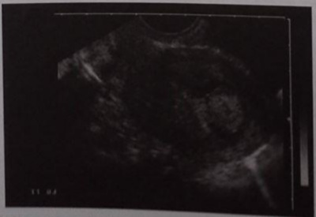
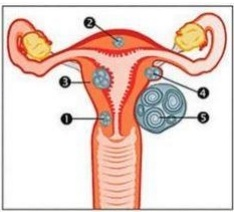

Questão 1 · Tratamento · 4000183721Uma paciente de 32 anos de idade realizou ultrassonogra a transvaginal para avaliação de rotina. O exame evidenciou útero com consistência heterogênea e irregular, com imagem hipoecoica sugerindo mioma submucoso de 20 mm em parede corporal anterior, com distância de 1.0 cm da serosa do útero. Ela não tem lhos. Acerca desse caso clínico, assinale a alternativa que indica a conduta mais adequada para a confirmação diagnóstica e tratamento do mioma uterino.
A Embolização das artérias uterinas
B Miomectomia por via laparotômica
C Ressonância magnética da pelve
D Miomectomia por via laparoscópica
E Miomectomia por via histeroscópica
Questão 2 · Miomatose uterina · 4000183236Uma paciente de 36 anos de idade, nuligesta, apresenta queixa de sangramento uterino anormal há seis meses, associado a dismenorreia EVA 5, nos primeiros três dias da menstruação. Refere manter ciclos regulares, porém com aumento da duração e do volume menstrual. Realizou ultrassonogra a, que apresenta os seguintes achados: útero em anteverso exão, de morfologia normal e contornos regulares; mede 9,9 × 5,5 × 5,5 cm, com volume estimado em 155 cc; apresenta contornos lobulados, presença de dois nódulos miometriais, assim caracterizados: nódulo 1 em parede posterior, FIGO 0, medindo 2,3 × 2,0 × 2,0 cm; nódulo 2 em parede anterior FIGO 6, medindo 2,0 × 3,0 × 2,3 cm; zona juncional sem alterações. O endométrio possui espessura de 0,2 cm. Regiões retrocervical, paracervicais e do septo retovaginal: sem alterações evidentes. Os ovários apresentam dimensões normais e ecotextura preservada. Entre as alternativas a seguir, assinale a que apresenta a abordagem cirúrgica mais adequada para a paciente referida nesse caso hipotético.
A miomectomia histeroscópica do nódulo 1 e miomectomia laparoscópica do nódulo 2.
B miomectomia laparoscópica do nódulo 1 e miomectomia histeroscópica do nódulo 2.
C miomectomia histeroscópica dos nódulos 1 e 2.
D miomectomia laparoscópica dos nódulos 1 e 2.
E somente miomectomia histeroscópica do nódulo 2.
Questão 3 · Fisiopatologia · 4000181854A necrobiose asséptica, também conhecida como degeneração rubra ou vermelha, corresponde ao infarto hemorrágico do leiomioma. Esse tipo de degeneração ocorre, principalmente, durante o uso de
A TH combinada do climatério.
B gestrinona.
C leuprorrelina.
D testosterona.
Questão 4 · Exames complementares · 4000181853O exame mais sensível para mapear miomas, antes da miomectomia, é
A a ultrassonografia pélvica.
B a ultrassografia endovaginal.
C a tomografia computadorizada da pelve.
D a ressonância nuclear magnética da pelve.
Questão 5 · Tratamento · 4000181725Mulher, 35 anos de idade, com sangramento uterino anormal há 1 ano, secundigesta secundípara, tendo realizado laqueadura tubária há 8 anos. Durante a investigação foram encontrados 3 leiomiomas uterinos submucosos com componente intramural. Realizou tratamento clínico sem sucesso com manutenção do sangramento. Entre as seguintes propostas terapêuticas, a mais adequada é:
A Miomectomia laparoscópica.
B Histerectomia laparoscópica.
C Miomectomia histeroscópica.
D Embolização de artérias uterinas.
Questão 6 · Fisiopatologia · 4000173565Mulher de 45 anos com queixa de sangramento menstrual aumentado há seis meses. Informa que aumentou o número dos dias e o volume do sangue catamenial. G2P2, partos vaginais. O toque vaginal revelou útero aumentado de volume com consistência endurecida em alguns pontos. A superfície era irregular. O exame de imagem revelou útero aumentado de volume, miométrio heterogêneo com imagens nodulares hipoecoicas, promovendo sombra acústica. Beta-HCG negativo. Em relação ao provável diagnóstico, assinale a alternativa CORRETA.
A Os tumores são inibidos pela ação estrogênica indireta, consequente ao efeito de
B Em comparação com o miométrio normal, os tumores apresentam maior densidade de receptores para estradiol.
C Existe uma maior estimulação local de isomerases que convertem estrona em estradiol.
D O tecido do estroma tumoral possui níveis mais baixos de aromatases citocromo P450.
E As células tumorais possuem maior resistência ao SHBG, promovendo maior disponibilidade de esteroides livres.
Questão 7 · Tratamento · 4000171006Mulher de 35 anos, nulípara, com desejo de gestar, realiza ultrassonogra a que revela mioma subseroso pediculado de aproximadamente 8cm. Nesse caso, a indicação terapêutica adequada é de:
A embolização de artéria uterina
B miomectomia laparoscópica
C ablação do endométrio
D histerectomia vaginal
Questão 8 · Miomatose uterina · 4000169786M.A.S., 38 anos, GIII/PIII/A0 3PC, laqueada, vem em consulta ambulatorial com queixa de aumento de uxo menstrual nos últimos 6 meses em grande quantidade, com coágulos e duração de 6 dias, associado com cólicas em baixo ventre que vêm piorando nesses últimos meses. Após consulta ginecológica, paciente retorna trazendo exame de ultrassonogra a solicitado: Útero AVF, Vol: 128 cm³ , endométrio de 6 mm, OD: 6,7 cm³ e OE: 7,5 cm³,presença de nódulo miomatoso de 3,0 cm (FIGO-2) em parede uterina anterior. Diante do laudo ultrassonográfico, pode-se afirmar que a conduta correta é:

A Histeroscopia cirúrgica.
B Histerectomia total.
C Tratamento clínico medicamentoso.
D Miomectomia.
Questão 9 · Tratamento cirurgico conservador · Tratamento · 4000169284Paciente de 32 anos procura ambulatório especializado referindo di culdade para engravidar. Ao exame ginecológico nada foi constatado de anormal. Foi solicitado um ultrassom pélvico e transvaginal que revelou conteúdo sólido de 1,5 cm na cavidade uterina, sugestivo de pólipo ou mioma submucoso. A próxima conduta é:
A Realizar histerectomia devido ao alto risco para câncer de endométrio.
B Encaminhar paciente para serviço de Vídeo Histeroscopia para exérese da lesão.
C Introduzir tratamento com progesterona e indução da ovulação com citrato de clomifeno.
D Introduzir tratamento com anticoncepcional hormonal oral e repetir o ultrassom em 3 meses.
Questão 10 · Miomatose uterina · 4000166614Leiomiomas uterinos são os tumores mais frequentes do trato genital feminino, clinicamente aparentes em cerca de 25% das pacientes. A incidência é mais alta em mulheres na terceira e quarta décadas de vida, sendo pouco comum na puberdade e em mulheres na pós-menopausa, faixa etária em que há tendência à diminuição do tamanho. Analise as seguintes afirmativas sobre os leiomiomas uterinos. I. Não há uma relação definida entre os anticoncepcionais orais e a presença de miomas. II. Parentes de primeiro grau de mulheres com miomas têm risco de aproximadamente 2,5 vezes maior de desenvolvimento de miomas. I I I . Dentre as opções de tratamento cirúrgico pode-se citar miomectomia abdominal, miomectomia laparoscópica, miomectomia histeroscópica, ablação endometrial e abdominal, vaginal ou histerectomia laparoscópica. I V. A ultrassonogra a é a técnica de imagem mais disponível e menos dispendiosa para diferenciar miomas de outra patologia pélvica. Estão corretas as afirmativas
A II e III, apenas.
B I e IV, apenas.
C I, II e III, apenas
D I, II, III e IV.
Questão 11 · Tratamento · Def inição · 4000166249Mulher, 24 anos de idade, refere ciclos menstruais irregulares, com uxo intenso com coágulos há 1 ano, e aumento da frequência urinária. Exame físico: abdome com massa de superfície bocelada, palpável 3 cm acima da sín se púbica; toque vaginal: útero móvel, aumentado de volume, com superfície bocelada e anexos livres; especular sem alterações. Ressonância magnética: útero com volume 300 cc, presença de 2 nódulos uterinos (FIGO 1 em parede posterior, de 2,0 cm e FIGO 2-5 em parede anterior de 6 cm). A mais adequada conduta é
A histerectomia total abdominal.
B miomectomia histeroscópica e laparoscópica.
C histerectomia subtotal laparoscópica.
D prescrição de contraceptivos hormonal.
Questão 12 · Tratamento cirurgico · 4000166163Em relação à miomectomia laparoscópica, assinale a alternativa correta.
A É uma técnica reservada apenas para miomas de pequeno tamanho, devido à eficácia da sutura laparoscópica ser inferior à da sutura aberta.
B É uma técnica reservada apenas para miomas de pequeno tamanho e em pacientes sem desejo reprodutivo.
C O uso de técnicas para minimizar o sangramento intraoperatório, como, por exemplo, o uso de vasopressina ou o clampeamento temporário das artérias uterinas, permite realizar cirurgias de miomas maiores em tamanho e número.
D Essa técnica promove mais aderência que a aberta.
E Para a extração dos nódulos dos miomas, pode-se realizar o morcelamento sem o uso de
Questão 13 · Tratamento cirurgico · 4000166162Uma paciente nuligesta, com desejo reprodutivo, com ciclos hipermenorrágicos há doze meses, refratária a tratamento clínico, realizou USG TV, que mostrou um mioma intramural-submucoso, tipo G2, medindo 6 cm, com manto externo de 0,3 cm e manto interno inexistente, o que foi confirmado na RM. Terminada a investigação com vídeo-histeroscopia diagnóstica, a conclusão foi Lasmar com escore 6. Foi indicado o uso de análogo de GnRh por um período de três meses e as dimensões do mioma permaneceram inalteradas. Com base nesse caso hipotético, assinale a alternativa que apresenta o melhor tratamento para a paciente.
A contraindicação absoluta de videolaparoscopia, indicando-se, portanto, miomectomia por laparotomia
B repetir o uso do análogo do GnRh por um período de mais três meses e, após, reavaliar a conduta
C vídeo-histeroscopia cirúrgica, com energia monopolar
D vídeo-histeroscopia cirúrgica, com energia bipolar
E videolaparoscopia
Questão 14 · Miomatose uterina · 4000165115Os leiomiomas são neoplasias do músculo liso, são benignos e se originam com frequência no miométrio. Sobre esta situação selecione a opção correta. I - Leiomiomas são tumores sensíveis ao estrogênio e a progesterona. II - O tabagismo é um fator de risco adicional para o aparecimento de leiomiomas. III - É raro o desenvolvimento de leiomiomas na pós menopausa.
A As afirmativas I e II são verdadeiras. A afirmativa III é falsa.
B As afirmativas I e III são verdadeiras. A afirmativa II é falsa.
C As afirmativas II e III são verdadeiras. A afirmativa I é falsa.
D As afirmativas I, II e III são verdadeiras.
E As afirmativas I, II e III são falsas.
Questão 15 · Miomatose uterina · 4000164962Mulher, 35 anos, nuligesta, está tentando engravidar, há 3 meses. Refere aumento da duração de sua menstruação de 3 para 7 dias, associada a aumento do uxo menstrual, com necessidade de uso de absorventes noturnos por pelo menos 5 dias do uxo. As queixas iniciaram há 6 meses, com piora progressiva. US transvaginal: imagem corporal, posterior, nodular, hipoecogênica, intramural, rechaçando o endométrio anteriormente, medindo 3cm. Vídeohisteroscopia diagnóstica: mioma posterior, FIGO 1. A opção terapêutica mais adequada é:
A miomectomia vídeo-histeroscópica
B miomectomia vídeo-laparoscópica
C histerectomia total abdominal
D histerectomia subtotal vaginal
Questão 16 · Def inição · 4000145920Uma paciente de 34 anos de idade, com queixa de sangramento uterino anormal, realizou uma ultrassonogra a transvaginal, que evidenciou: nódulo hipoecogênico, com limites bem definidos, medindo 3 cm; manto interno de 0 cm; e manto externo de 2 cm. Com base nesse caso hipotético e na classificação da FIGO, a lesão pode ser classificada como
A FIGO 0.
B FIGO 1.
C FIGO 2.
D FIGO 3.
E FIGO 4.
Questão 17 · Miomatose uterina · 4000145556Sobre leiomiomas, analise as a rmativas abaixo e dê valores Verdadeiro (V) ou Falso (F). () São tumores que respondem a ação da progesterona e do estrogênio. () T umores subserosos estão associados a dor pélvica por torção. () Apenas 1 % a 3% dos casos de infertilidade estão associados a presença de leiomiomas. () Dor pélvica aguda é a apresentação mais frequente desta condição. Assinale a alternativa que apresenta a sequência CORRETA de cima para baixo.
A V, F, F, V
B V, F, V, F
C V, V, V, F
D F, V, V, V
Questão 18 · Miomatose uterina · 4000141825Mulher de 40 anos procura o ambulatório de ginecologia com queixa de sangramento menstrual prolongado há seis meses, aumentando os dias e o volume. G2P2 (partos normais). Informa também que apresenta cólicas leves no período catamenial. O exame genital revela útero pouco aumentado de volume, consistência broelástica, superfície regular e mobilidade preservada. Traz consigo exame ecográ co que revela útero de volume adequado, miométrio homogêneo, eco endometrial espessado às custas de imagem nodular hipoecoica, que gera sombra acústica. Assinale a alternativa que indica o provável diagnóstico.
A Mioma submucoso
B Mioma intramural
C Mioma subseroso
D Pólipo endometrial
E Adenomiose
Revisar: possível letra faltando em enunciado
Questão 19 · Tratamento · Ginecologia · Miomatose uterina · 4000141635Mulher de 48 anos apresenta aumento do volume menstrual e cólicas intensas que não melhoram com uso de analgésicos. AP: menstruações regulares a cada 30 dias com duração de 6 dias, G3P3C3, laqueadura prévia, HAS, obesidade e tabagismo. Exame ginecológico: útero aumentado de volume, superfície lobulada. Ultrassom transvaginal: útero com volume 200 cm³, várias imagens nodulares de até 20 mm sugestivas de miomas de localização intramural e subserosa, endométrio regular de 7 mm, ovários sem alterações. A conduta inicial é indicar
A miomectomia laparoscópica.
B anticoncepcionais combinados.
C anti-inflamatórios não hormonais no período menstrual.
D análogo de GnRH.
Questão 20 · Quadro Clínico · 4000140482Os leiomiomas são neoplasias benignas do útero, responsáveis por sintomas de
A aumento do fluxo menstrual e diminuição do intervalo menstrual quando inteiramente subserosos.
B metrorragia e dismenorreia quando submucosos.
C infertilidade e compressão de órgãos vizinhos quando submucosos pediculados.
D dor pélvica crônica e infertilidade quando subserosos sésseis.
E dor aguda por degeneração ou torção quando inteiramente intramurais.
Questão 21 · Tratamento · 4000138680Uma paciente de 37 anos de idade, com desejo de engravidar, refere uxos menstruais abundantes e prolongados. O exame ginecológico foi normal. A ultrassonogra a transvaginal e a histeroscopia revelaram útero com volume de 98 cc e a presença de leiomioma do útero de 2 cm, submucoso, tipo I. Com base nessa situação hipotética, assinale a alternativa correta.
A A paciente deverá ser submetida à miomectomia histeroscópica, pois o mioma em questão explica o quadro clínico e é fator de infertilidade.
B Outras causas da queixa clínica deverão ser investigadas, pois o mioma é muito pequeno.
C Deve-se tratar a paciente com progestagênio, que reduz sobremaneira o volume do mioma.
D Por se tratar de mioma tipo I, deve-se associar ao tratamento histeroscópico a videolaparoscopia.
E O tratamento ideal é o clínico, com análogo do GnRH.
Questão 22 · Miomatose uterina · 4000137973Mulher, 43 anos de idade, refere dores pélvicas, dispareunia de profundidade e sangramentos menstruais volumosos. Realizou ressonância magnética que evidenciou vários nódulos uterinos, ilustrados e numerados de 0 a 8 na imagem abaixo, conforme a classificação dos miomas da Federação Internacional de Ginecologia e Obstetrícia. Nesse caso, o(s) nódulo(s)

A 2 a 5 são totalmente intramurais e não interferem no padrão de sangramento menstrual.
B 1 é subseroso com mais de 50% acometimento intramural e pode ser assintomático.
C 8 é conhecido como parasitário e pode ocasionar dispareunia de profundidade.
D 3 é intramural com mais de 50% de acometimento submucoso, porém não ocasiona sangramento irregular.
E 6 é submucoso com mais de 50% de acometimento intramural e pode ocasionar dores pélvicas.
Questão 23 · Miomatose uterina · 4000133738Mulher de 36 anos, GIP0AI, com queixa de sangramento uterino anormal e infertilidade conjugal, busca atendimento no ambulatório de ginecologia. Realiza histeroscopia que identi ca mioma de 2cm totalmente intracavitário com pedículo inserido na parede anterior uterina. A classificação desse mioma, de acordo com a FIGO (2011) e o tratamento mais adequado para esse caso, respectivamente, são:
A tipo 0 / miomectomia histeroscópica
B tipo 0 / histerectomia laparoscópica
C tipo 8 / histerectomia laparoscópica
D tipo 8 / miomectomia histeroscópica
Revisar: possível letra faltando em enunciado
Questão 24 · Tratamento clínico · 4000129847Paciente de 43 anos de idade tem diagnóstico de miomatose uterina e apresenta sangramento menstrual em grande quantidade e com duração de 7 a 8 dias. Sobre o tratamento medicamentoso da miomatose uterina assinale verdadeiro (V) ou falso (F) nas seguintes afirmativas: ( ) Noretisterona 10 mg/dia/10 dias pode causar hipertrofia endometrial ( ) Cetrorelix aumenta volume uterino em 30% ( ) Ulipristal diminui volume miomas ( ) Asoprisnil pode provocar hipertrofia miomatosa ( ) Medroxiprogesterona injetável previne degeneração vermelha A seguinte alternativa contempla o correto ao solicitado no enunciado
A F, F, V, V e F
B V, F, V, V e V
C V, V, V, F e F
D F, V, F, V e F
E V, F, V, V e F
Questão 25 · Tratamento · 4000129652Leia o caso clínico a seguir. Mulher de 30 anos, com quadro clínico de sangramento uterino anormal rebelde ao tratamento clínico, mostra à ultrassonogra a um mioma com cerca de 50% de penetração no miométrio, base de 1/2, ocupando a cavidade endometrial, no terço superior da parede lateral esquerda do útero e com cerca de 3 cm o maior diâmetro. Nesse caso, de acordo com a classificação PALM-COEIN (Federação Internacional de Ginecologia e Obstetrícia), o tratamento de escolha, é a
A histerectomia por laparotomia.
B miomectomia por laparotomia.
C miomectomia por laparoscopia.
D miomectomia antecedida por análogo do GnRH.
Questão 26 · Tratamento cirurgico · 4000120029Mulher de 29 anos, nuligesta, apresenta aumento do uxo menstrual com cólicas discretas. Método contraceptivo: condom. Exame ginecológico normal. Ultrassonografia transvaginal: mioma tipo 1 com 2 cm de diâmetro. A conduta é
A miomectomia histeroscópica mais ablação do endométrio.
B miomectomia histeroscópica.
C histerectomia subtotal laparoscópica.
D histerectomia total laparoscópica.
Questão 27 · Quadro Clínico · Leiomiomatose uterina · 4000118004JABB, 43 anos, apresenta sangramento uterino anormal. Nessa faixa etária, a causa mais comum é:
A Síndrome dos ovários policísticos.
B Miomatose uterina.
C Pólipos endometriais.
D Câncer de endométrio.
E Câncer de colo uterino.
Questão 28 · Quadro Clínico · Exames complementares · Tratamento cirurgico conservador · 4000117818MSMC, 32 anos, vem apresentando sangramentos uterinos anormais repetidos. Ela não tem lhos e manifesta o desejo de gestar no futuro. Uma ultrassonogra a demonstra a presença de vários miomas, o maior deles com 4 cm de diâmetro e com componente submucoso. O próximo passo na propedêutica dessa paciente deve ser:
A Tomografia da pelve.
B RNM da pele.
C Histeroscopia diagnóstica.
D Histeroscopia cirúrgica.
E Histerectomia total.
Questão 29 · Tratamento cirurgico conservador · 4000117260Mulher, 28 anos, G2P2A0, apresenta aumento do número de dias de sangramento menstrual com uxo muito aumentado e anemia. Realizou investigação que revelou mioma submucoso confirmado com histeroscopia com pontuação LASMAR 3. Deseja engravidar ainda. Qual a melhor conduta?
A uso de análogo de GnRh com ressecção histeroscópica a seguir
B miomectomia laparotômica
C miomectomia por videolaparoscopia
D ressecção histeroscópica com ressectoscópio
E histerectomia vaginal
Questão 30 · Tratamento · Histeroscopia · 4000114450A Sociedade Europeia de Endoscopia Ginecológica classifica o mioma submucoso do útero em tipo 0, tipo I e tipo II. Em relação a estes tipos de mioma do útero, é correto afirmar:
A o tipo II é o de mais fácil abordagem cirúrgica e deve sempre ser ressecado por viahisteroscópica.
B os tipos 0 e I devem sempre ser tratados no pré-operatório com análogo de GnRH.
C o tipo II é o único que deve ser tratado no pré-operatório com progestagênios.
D nenhum deles e não importa tamanho e localização pode ser abordado com histeroscopia cirúrgica ambulatorial.
E após ressecção histeroscópica do tipo 0 a paciente, se engravidar, pode ter parto normal.
Questão 31 · Etiologia · Exames complementares · Quadro clínico · 4000109045Paciente de 40 anos apresenta sangramento menstrual excessivo com o seguinte achado histeroscópico: Qual é o tratamento mais adequado?

A Dispositivo intrauterino com progesterona.
B Ácido tranexâmico.
C Embolização.
D Ablação histeroscópica.
Questão 32 · Quadro Clínico · 4000108116Em relação aos miomas, é correto afirmar que
A miomas subserosos aumentam o fluxo menstrual na sua quantidade.
B miomas intramurais interferem mais no intervalo do ciclo, aumentando-o.
C miomas submucosos podem determinar metrorragia, aumentando a duração e a quantidade e não respeitando o ciclo.
D miomas intramurais são os mais passíveis de torção com quadro de abdome agudo.
E os subserosos quando pediculados podem entrar em trabalho de expulsão, chamando-se mioma em parturição.
Questão 33 · Tratamento cirurgico · Tratamento clínico · 4000089309No período pré-operatório de mulheres com miomatose uterina, o uso dos agonistas do hormônio liberador de gonadotrofina tem como objetivo a:
A melhora da dor
B diminuição de infecção
C diminuição de aderências
D melhora dos níveis de hemoglobina
Questão 34 · Def inição · Tratamento cirurgico conservador · 4000076708Paciente com queixa de sangramento uterino anormal realiza histeroscopia que identi ca mioma de 3cm totalmente localizado na cavidade uterina. Conforme a classificação da Sociedade Europeia de Cirurgia Endoscópica, o nível desse mioma e o tratamento mais adequado, respectivamente, são:
A nível 1 / miomectomia laparoscópica
B nível 1 / miomectomia histeroscópica
C nível 0 / miomectomia histeroscópica
D nível 0 / miomectomia laparoscópica
Revisar: possível letra faltando em enunciado
Questão 35 · Tratamento · 4000073260Sobre a embolização da artéria uterina no tratamento dos miomas uterinos podemos afirmar:
A A embolização das artérias uterinas é tratamento de escolha nas mulheres com desejo reprodutivo.
B Amenorréia e a diminuição da reserva ovariana podem ocorrer após o procedimento.
C A embolização é um bom método na suspeita de patologia maligna pela neovascularização do tumor.
D Em geral, após o procedimento a paciente permanece assintomática. A dor no pós- operatório deve ser sempre investigada pelo risco de hemorragia intra- abdominal.
E Boa opção nas mulheres assintomáticas. ida oib pr ed
Questão 36 · Tratamento · 4000073250Paciente apresenta hipermenorréia há 6 meses devido à mioma submucoso de 2,8 cm de diâmetro. Neste caso, a melhor conduta é:
A Miomectomia abdominal.
B Histerectomia vaginal.
C Histerectomia abdominal subtotal.
D Miomectomia histeroscópica.
E Miomectomia laparoscópica.
Questão 37 · Miomatose uterina · 4000053000Senhora com 37 anos de idade, queixa-se que há cerca de 2 anos menstrua na data prevista, porém em grande quantidade (III) e durante muitos dias (7 - 8) e com muitos coágulos. Há um ano tem cólicas de forte intensidade em região hipogástrica durante todo período menstrual e que interferem em seus afazeres. A paciente é gesta III, para III (último há 5 anos). Ao exame ginecológico nenhuma anormalidade foi detectada em genitais externos, vagina e colo uterino. Ao toque combinado percebe-se útero medindo cerca de 11cm de comprimento, endurecido e com superfície lisa. Anexos impalpáveis. Apresenta ultrassom pélvico ginecológico que mostra miométrio heterogêneo e com a presença de cinco nódulos intramurais, o menor com 28 x 37mm e o maior com 63 x 57mm. Volume uterino de 851cm3. Endométrio 16mm de espessura. Anexos normais. Sobre o caso em questão analise as considerações abaixo. I. A principal degeneração da doença uterina que a paciente apresenta é a hialina. II. Um dos fatores que contribuem para o aumento da quantidade e duração do sangramento menstrual é a expressão elevada da aromatase endometrial. III. A algia menstrual é dismenorreia primária e pode ser tratada com antiinflamatório inibidor da Cox2. IV. A presença de coágulos deve-se ao aumento da plasmina e com isto ocorrendo neutralização da brina e a formação de coágulos. V. A diminuição do volume uterino pode ser obtida com a prescrição de, por exemplo, acetato de leuprolida ou de ulipristal. Estão corretas apenas as alternativas
A I.
B II.
C I e III.
D II e V.
E II, III e V.
Questão 38 · Def inição · Tratamento cirurgico conservador · 4000052397Uma mulher de 32 anos, nuligesta, queixa-se de sangramento menstrual aumentado e dor no baixo ventre. O exame ginecológico é normal, citopatológico cervicovaginal inflamatório leve e ultrassonogra a transvaginal com útero de 110cm³ , apresentando hipoecoico de 2cm de diâmetro sugestivo de leiomioma tipo 0 (FIGO, 2011), confirmado pela histerossonografia. A conduta é:
A Histerectomia subtotal.
B Histeroscopia cirúrgica com miomectomia.
C Tratamento clínico com anti-inflamatórios não esteroidais.
D Inserção do sistema intrauterino liberador de levonorgestrel.
E Miomectomia laparoscópica.
Questão 39 · Quadro Clínico · 4000036877As afecções benignas do corpo uterino, muito incidentes, são importantes causas de cirurgias pélvicas e podem afetar bastante a qualidade de vida das mulheres. Sobre essas afecções, é correto afirmar que
A a diferenciação entre leiomiomas e sarcomas se dá, com bom valor preditivo positivo, pelo crescimento rápido e pela biópsia de endométrio antes do tratamento cirúrgico.
B os leiomiomas são monoclonais com receptores de estrogênio e progesterona maiores que no miométrio, o que causa sangramento, aumentado principalmente no período pré- menopausa.
C a adenomiose tem o tabagismo com mais de 20 cigarros por dia como fator de risco.
D a infertilidade é uma consequência comum nas pacientes com adenomiose.
Questão 40 · Tratamento cirurgico conservador · 4000033604Diante de um diagnóstico de leiomioma submucoso, medindo 1,5 cm no seu maior diâmetro, em uma paciente nuligesta, a melhor conduta terapêutica para o caso é:
A Prescrição de análogo de gonadotrofinas.
B Miomectomia via laparotomia.
C Miomectomia via laparoscopia.
D Miomectomia via histeroscópica.
Questão 41 · Tratamento cirurgico conservador · 4000030480Mulher de 33 anos, nuligesta, apresenta sangramento uterino anormal caracterizado por aumento da quantidade e duração, associado a dismenorreia secundária. A ultrassonogra a mostra mioma em parede lateral direita do 1/3 inferior do útero, com maior diâmetro de 2cm, com penetração de 20% no miométrio e base de 1/3 (Score=1, classificação STEP=w). Diante deste quadro, a opção terapêutica é:
A uso de anticoncepcionais orais.
B ressecção histeroscópica.
C análogo do GnRH com posterior ressecção histeroscópica.
D miomectomia tradicional.
Questão 42 · Patogênese · Tratamento · Quadro Clínico · 4000026414O mioma é um tumor da camada muscular do útero, que pode se localizar em várias regiões uterinas, ocasionando dor, sangramento, anemia e com baixo potencial de transformação sarcomatosa. O conhecimento de sua siopatologia é essencial para o tratamento correto. Dessa forma,
A o mioma uterino é um tumor benigno originário da fibra muscular lisa do útero.
B o estudo histológico do mioma mostra feixes musculares lisos entrelaçados em diversas direções, com atipias, várias mitoses e muita necrose.
C o mioma subseroso ocorre quando a maior porção do tumor se encontra abaixo do endométrio, dentro da cavidade endometrial.
D o tratamento dos miomas está restrito à histerectomia.
Questão 43 · Tratamento · 4000019841Mulher, 35 anos, com desejo de engravidar, comparece preocupada com ultrassom transvaginal com útero de 200cm³ com presença de nódulo hipoecogênico de 4 cm, tipo 7 pela classificação da FIGO. Ela refere ciclos regulares com uxo de 4 dias sem coágulos. Nega dor. Qual a melhor conduta?
A Expectante.
B Análogo do GnrH.
C Miomectomia laparoscópica.
D Miomectomia histeroscópica.
Questão 44 · Etiologia · Tratamento · 4000011690Mulher, 40 anos de idade, casada, negra, nuligesta, com desejo reprodutivo, apresenta queixa de sangramento menstrual aumentado há 2 anos. Refere ciclos regulares, uxo com duração de 10 dias com saída de coágulos, e dismenorreia. Sem comorbidades ou antecedentes cirúrgicos. Exame físico ginecológico: abdome e exame especular sem alterações, toque vaginal evidenciando útero móvel, de superfície bocelada, pouco aumentado de tamanho. Ultrassonogra a endovaginal: útero anteverso etido de 120cc, com ecotextura miometrial heterogênea e zona juncional espessada, nódulo intramural de 3,0 cm, eco endometrial de 5,0 mm e anexos sem alterações. Qual é a conduta mais adequada?
A Miomectomia laparoscópica e liberar para engravidar após cirurgia.
B Embolização de artérias uterinas e liberar para engravidar após procedimento.
C Antiinflamatório não hormonal e liberar para engravidar.
D Miomectomia histeroscópica e fertilização in vitro após cirurgia.
E Análogo de GnRH, miomectomia laparoscópica e fertilização in vitro.
Questão 45 · Tratamento cirurgico conservador · 4000130378Mulher, 35a, G2P2A0C0, comparece ao ambulatório de ginecologia referindo aumento do uxo menstrual há 6 meses, com duração de 8 dias, presença de coágulos e uso de seis absorventes por dia. Faz uso de anticoncepcional oral combinado. Ultrassonogra a pélvica: útero de volume de 87cm³ , endométrio com espessura de 5mm e imagem nodular de 2x2 cm compatível com mioma FIGO 1, ovários sem alterações. Hemoglobina= 9,5 g/dL. A CONDUTA É:
A Miomectomia histeroscópica.
B Trocar anticoncepcional oral combinado por injetável combinado mensal.
C Miomectomia laparoscópica.
D Trocar anticoncepcional oral combinado por transdérmico.
Questão 46 · Tratamento cirurgico · 4000120252Mulher de 32 anos, nuligesta, apresenta sangramento uterino aumentado. US transvaginal: mioma classificação FIGO I, menor de 2 cm. O tratamento mais apropriado é
A inserção de sistema intrauterino de levonorgestrel.
B miomectomia histeroscópica.
C miomectomia laparoscópica.
D histerectomia.
Questão 47 · Tratamento · 4000114268Paciente de 35 anos, nulípara, com desejo de engravidar no prazo de 1 ano, refere sangramento menstrual excessivo e prolongado há 1 ano. Ao exame ginecológico, o útero está aumentado de volume e irregular. Exame especular normal. A ultrassonogra a revelou útero com 210 cc às custas de 2 miomas intramurais de 6 e 7 cm de diâmetro. A hemoglobina estava normal. Diante do quadro clínico, a conduta mais adequada é
A usar análogo do GnRH para melhora do quadro clínico.
B usar progestagênio contínuo para diminuir o sangramento e o volume dos miomas.
C usar anticoncepcional hormonal combinado contínuo.
D colocar um dispositivo intrauterino de levonorgestrel.
E realizar miomectomias.
Questão 48 · Fatores de risco e de proteção · 4000112943Entre os fatores de risco para o desenvolvimento de miomas, destaca-se:
A mulheres de raça negra apresentam um risco relativo (RR) de 9,4 em relação às brancas.
B mulheres com menarca após os 13 anos têm RR de 2,4 em relação às que apresentaram menarca antes de 11 anos.
C mulheres com índice de massa corpórea (IMC) < 25 kg/m² possuem RR de 2,3 em relação às com IMC > 30 kg/m².
D o risco de doença não aumenta quando há história familiar de primeiro grau.
E cicatriz uterina prévia predispõe o surgimento de miomas.
Questão 49 · Tratamento cirurgico conservador · 4000099518Paciente de 33 anos de idade, nulípara, com aumento progressivo de uxo menstrual, portadora de mioma uterino de 2,5cm, com deformidade da cavidade endometrial, foi investigada por infertilidade, não sendo encontrada outra causa etiológica. A conduta proposta deve ser:
A Miomectomia laparoscópica.
B Tratamento com análogos do GnRH.
C Miomectomia histeroscópica.
D Expectante com seguimento semestral do mioma por ultrassonografia.
Questão 50 · Tratamento clínico · 4000085737Paciente de 48 anos refere ciclos irregulares há um ano, com longos períodos de amenorréia. Quando menstrua, o uxo é abundante, ultrapassando oito dias de sangramento. Sem outras queixas. Menarca aos 13 anos, com ciclos regulares, intervalo de 30 dias e fluxo com duração de quatro dias. A partir dos 45 anos, os ciclos passaram a ser de 24 dias, com fluxo de 4 a 7 dias. Gesta II Para II. Laqueadura tubaria no 2º parto. Avó materna com câncer de mama aos 70 anos. Hipocorada (+/4+); PA = 120 x 80 mmHg. USG de pelve e abdome; endométrio de 9 mm, homogênio; mioma intramural com componente submucoso, medindo 25 mm, em parede corporal anterior e cisto de 15mm em ovário direito. A conduta mais adequada, neste momento, para a paciente é:
A Agonista de gonadotrofina para controle de anemia e diminuição do mioma e ressecção histeroscópica.
B Ressecção histeroscópica, para miomas de pequeno volume para controle de sangramento.
C Histerectomia com anexectomia bilateral, para tratamento definitivo e diminuição de risco de câncer de mama.
D Progestogênio por via oral, durante doze dias na segunda fase do ciclo, para regularização do ciclo menstrual.
Questão 51 · Tratamento cirurgico · Tratamento clínico · 4000079487O uso dos agonistas do hormônio liberador de gonadotro na em mulher de 38 anos, com ciclos regulares e miomatose uterina, tem como objetivo:
A melhorar os níveis de hemoglobina no pré-operatório
B diminuir as aderências no pós-operatório
C melhorar a dor no pré-operatório
D evitar o tratamento cirúrgico
Questão 52 · Fatores de risco e de proteção · 4000049177Mulher, 45 anos, G1P1(cesariana), afrodescendente, hipertensa, fumante. Queixa-se de sangramento menstrual aumentado na quantidade de dias e no volume de sangue. Informa que sua mãe e irmã já zeram histerectomia pelo mesmo motivo. O exame geral demonstra IMC de 51. O exame ginecológico revela útero aumentado de volume assimetricamente, com superfície irregular e consistência endurecida. De acordo com o quadro acima, assinale a alternativa que contém um fator protetor para a doença em questão, explicando o mecanismo dessa proteção.
A Tabagismo, pelo aumento da secreção hepática de SHBG
B Paucípara, pela ausência de contrações uterinas
C Idade menor que 50 anos, pela maior concentração de progesterona
D Obesidade, pela maior participação da estrona em detrimento do estradiol
E Afrodescendente, pela produção d a17-ß estradiol pelo CYP17
Questão 53 · Quadro Clínico · 4000036288As massas pélvicas são achados clínicos comuns, sendo o aumento do útero um dos mais encontrados. Sobre esses sinais, é CORRETO afirmar que:
A Os leiomiomas são neoplasias benignas derivadas de um único miócito progenitor, podendo ser de assintomáticos a provocadores de vários sintomas.
B Os leiomiomas são sensíveis ao estrogênio, sem atividade relatada da progesterona, tendo o pico de incidência na quarta década de vida.
C A dor pélvica aguda é o sintoma típico dos miomas de localização intramural.
D Os leiomiomas assintomáticos devem ser tratados cirurgicamente devido ao risco de malignização.
Questão 54 · Tratamento · 4000020114Mulher de 34 anos, G0P0, com desejo de gestar há 4 meses, apresenta quadro de aumento do número de dias de sangramento menstrual e aumento do uxo há 1 ano. Ao exame físico, apresenta útero aumentado de volume 3 cm acima da sín se púbica. Solicitado hemograma com Hb = 9.5 g/dl e Ht = 36%; plaquetas = 200.000; coagulograma normal. A ultrassonogra a transvaginal mostrou um útero de 140 cm³ com mioma submucoso de 4 cm e outro subseroso de 3 cm em parede posterior. À histeroscopia diagnóstica, notou-se um mioma submucoso pontuação 5 na classificação de Lasmar (grupo II). Qual a melhor conduta nesse caso?
A Seguimento clínico devido ao desejo de gestar nesse momento.
B Anticoncepcional oral combinado de média dosagem por 2 a 3 meses.
C Análogo do GnRH por 3 a 6 meses seguido de miomectomia histeroscópica.
D Miomectomia laparoscópica devido à impossibilidade de miomectomia histeroscópica.
Questão 55 · Miomatose uterina · 4000006746Mulher, 73 anos de idade, tercigesta, secundípara, procura o Posto de Saúde preocupada com o resultado de ultrassonogra a endovaginal solicitado pelo geriatra. Refere ser hígida, nega sangramento genital e queixas climatéricas. Não faz uso de medicação diária. Laudo da Ultrassonogra a = nódulo sólido uterino intramural com área calci cada medindo 15x13mm, espessura do endométrio: 2 mm, ovários não observados. Qual o provável diagnóstico e qual a conduta?
A Leiomiossarcoma uterino; histerectomia.
B Teratoma uterino; histerectomia.
C Mioma uterino calcificado; tranquilizar a paciente.
D Mioma uterino; miomectomia.
E Nódulo uterino a esclarecer; biópsia percutânea.
Questão 56 · Tratamento · 4000130221Mulher, 47a, G3P3C0, retorna a Unidade Básica de Saúde para checar exame de ultrassonogra a pélvica solicitada em consulta de rotina há dois meses. Nega qualquer sintoma. Apresenta ciclos menstruais regulares, com volume de sangramento normal. Antecedente pessoal: laqueadura após o parto do último lho. Exame ginecológico: útero discretamente aumentado ao toque vaginal, indolor à mobilização. Ultrassonogra a pélvica: útero antevertido com volume de 200 cm³ (normal de 90-120 cm³), apresentando dois nódulos intramurais compatíveis com miomas de 2,0 x 2,0 cm e de 1,8 x 2,3 cm; ovários visualizados e sem alterações; ausência de ascite. A conduta é:
A Histerectomia por via laparoscópica.
B Prescrever acetato de medroxiprogesterona de depósito a cada 3 meses.
C Expectante.
D Prescrever pílula anticoncepcional contínua com progestágeno isolado.
Questão 57 · Etiologia · Exames complementares · 4000121201Uma mulher de 37 anos, negra, nulípara, procura a UBS com queixa de sangramento vaginal irregular, durando quase todo o mês; está assim há seis meses e vem piorando. Ao exame ginecológico, o médico identi ca que o útero está aumentado de volume. Frente a esse quadro, qual exame de imagem deve ser realizado e o que se espera dele?
A Ultrassonografia pélvica para avaliar a espessura endometrial, pois há grande possibilidade de se tratar de hiperplasia ou carcinoma endometrial.
B Histerossalpingografia para investigar a existência de pólipo endometrial, que é um fator que justifica a metrorragia.
C Ultrassonografia pélvica para identificar e assim confirmar a hipótese mais provável de mioma subseroso.
D Ressonância nuclear magnética, que é o exame “padrão-ouro” e que melhor identifica e localiza nódulos de mioma.
E Ultrassonografia pélvica para avaliar a presença de mioma submucoso, que é a localização que mais justifica esse padrão de sangramento.
Revisar: possível letra faltando em enunciado
Questão 58 · Etiologia · 4000105022Paciente com 42 anos, G3P3A0 (3PN), submetida à laqueadura tubária há 5 anos, apresenta aumento do uxo e da duração da menstruação há 6 meses. Refere fraqueza e mal-estar geral durante o sangramento. Ao exame clínico, apresenta útero aumentado de tamanho. US-TV: útero AVF, centrado e com vol: 425 cm³, apresenta nódulo único, intramural, fúndico de 8 cm no maior diâmetro, HB: 9,8 Ht: 27%. Refere que há 10 meses vem tentando controlar o sangramento com medicações hormonais (desogestrel via oral e medroxiprogesterona injetável) sem sucesso. Qual a melhor conduta para esta paciente?
A Histerectomia total vaginal.
B Miomectomia laparoscópica.
C Histerectomia total abdominal.
D Miomectomia histeroscópica.
Questão 59 · Tratamento cirurgico · 4000102458São indicações para tratamento cirúrgico do leiomioma uterino, EXCETO:
A Aumento da duração e do fluxo menstrual não responsivo ao tratamento conservador.
B Perimenopausa com irregularidade de fluxo menstrual.
C Perdas gestacionais recorrentes com distorção importante da cavidade endometrial.
D Compressão de ureter com hidronefrose.
Questão 60 · Tratamento clínico · 4000098696Paciente de 35 anos sem prole completa, foi diagnosticado com quadro de mioma uterino. Não foi indicado tratamento cirúrgico (histerectomia ou miomectomia) . O que não é indicado:
A Pode ser realizada a embolização da artéria uterina caso o mioma seja sintomático
B O uso de inibidores da síntese e liberação de prostaglandinas pode se usado para diminuir o sangramento e a dismenorreia
C Se ela não deseja engravidar no momento, o anticoncepcional hormonal é uma boa escolha
D Para antagonizar o efeito do estrogênio pode ser utilizado o hormônio de crescimento subcutâneo por 6 meses.
Questão 61 · Ultrassonograf ia · 4000078773Mulher, 35 anos, assintomática, realiza dois exames de USG transvaginal com um ano de intervalo entre eles. O primeiro revelou útero de 10 cm x 8,5 cm x 7 cm, miomatoso, com mioma subseroso medindo 7 cm de diâmetro. O segundo demonstra útero de 16 cm x 11 cm x 9 cm com mioma subseroso de 9 cm. Refere desconforto pélvico. O exame físico é compatível com o laudo ultrassonográfico. A causa mais provável do aumento nas dimensões apresentadas acima é a presença de:
A Sarcoma uterino.
B Degeneração miomatosa.
C Adenomioma.
D Crescimento uterino às custas de aumento dos miomas.
Questão 62 · Tratamento cirurgico conservador · 4000066401Paciente, 47 anos, apresenta queixa de sangramento vaginal após dois anos de amenorreia acompanhada, no início, de sintomas vasomotores e que, no momento, tornaram-se bastante fugazes. Refere história prévia de miomatose uterina. Gesta V, Para V (cinco partos normais), com laqueadura tubária. Ultrassonogra a demonstra útero com 10,0 X 7,0 X 5,0 cm, com textura miometrial heterogênea à custa de vários nódulos hipoecóicos, sendo o maior com 3,0 X 2,8 cm, localizado em parede uterina anterior, abaulando o endométrio. Endométrio com 7,0 mm, heterogêneo. Ovários não visualizados devido a interposição gasosa. A conduta a ser adotada nesse caso é:
A Início de terapia hormonal combinada.
B Vídeo-histeroscopia diagnóstica.
C Histerectomia total abdominal.
D Miomectomia.
E Uso de análogo de GnRH.
Questão 63 · Tratamento · 4000056910Constitui contraindicação para embolização de miomas uterinos:
A Coagulopatias.
B Mioma > 10cm.
C Insuficiência hepática.
D Antecedente de miomectomia.
E Paciente com disfunção ovarina por Síndrome dos ovários policísticos.
Questão 64 · Tratamento · Quadro Clínico · 4000044523Paciente com 35 anos de idade, gestante no curso de 28 semanas procura o serviço de emergência de uma maternidade com dor progressiva e localizada que não cessa com analgésicos habituais, há três dias, Nega febre ou perdas genitais, informa boa movimentação fetal. Ao exame, percebe-se grande massa adjacente ao útero gravídico, amolecida, no entanto a dinâmica uterina e o sinal de Blumberg estão ausentes. No hospital, não respondeu aos analgésicos mais potentes. Realizou USG que revelou nódulo miometrial/subseroso ecoico de 400cm³, heterogêneo, com áreas císticas. Distancia-se da cavidade uterina por 05 mm. Considerando esse cenário, assinale a alternativa que reúne o provável diagnóstico e a conduta mais adequada.
A Mioma torcido/morfina
B Cisto hemorrágico/codeína
C Degeneração hialina/expectante
D Degeneração carnosa/miomectomia
E Cisto torcido/laparoscopia
Questão 65 · Fisiopatologia · Fatores de risco e de proteção · 4000034336Os miomas uterinos são a indicação mais frequente de histerectomia no Brasil. Em relação aos miomas uterinos, assinale a alternativa ERRADA:
A O risco é maior se a história familiar é positiva para miomas em parentes de primeiro grau.
B Os intramurais diminuem a taxa de fertilidade.
C São tumores monoclonais.
D Tanto o estrogênio quanto a progesterona podem promover seu aparecimento.
Questão 66 · Tratamento cirurgico conservador · 4000024306Mulher de 30 anos, nuligesta, com sangramento menstrual aumentado em relação à quantidade e duração, associado a dismenorreia secundária, apresenta, à ultrassonografia endovaginal, imagem de mioma submucoso com maior diâmetro de 2 cm. A terapêutica adequada é:
A anti-inflamatório não hormonal.
B anticoncepcional hormonal.
C embolização do mioma.
D ressecção histeroscópica.
Questão 67 · Tratamento · Quadro Clínico · Exames complementares · 4000023815Paciente de 39 anos, com prole definida, apresenta sangramento menstrual aumentado, dismenorreia, anemia que não melhora com medicação, foi submetida à ultrassonogra a, que mostrou presença de nódulo localizado parcialmente na cavidade uterina, medindo 6 cm, com mais de 50% intramural, evidenciando também três nódulos regulares de baixa ecogenicidade e intramurais. O volume do útero mediu 198 cm³. O diagnóstico e a conduta definitiva são:
A polipo endometrial histerectomia vaginal.
B leiomiomas e histerectomia vaginal.
C adenomiose e histerectomia abdominal.
D leiomiomas e histerectomia abdominal.
Questão 68 · Diagnóstico dif erencial · 4000130188Mulher, 54a, vaginal ou dor abdominal. Método anticoncepcional do casal= vasectomia. Antecedente Pessoal: menopausa aos 50 anos, sem uso de terapia hormonal. A ultrassonogra a de um ano atrás: útero pouco aumentado imagem de mioma intramural posterior de 3 cm de diâmetro. Exame ginecológico atual: útero aumentado de volume, endurecido, palpável na cicatriz umbilical. O DIAGNÓSTICO É:
A Degeneração sarcomatosa do mioma.
B Degeneração hialina do mioma.
C Crescimento normal do mioma.
D Degeneração cística do mioma.
Questão 69 · Tratamento · 4000118339Paciente de 32 anos, nuligesta, apresenta sangramento menstrual aumentado e prolongado há 1 ano e, recentemente, desenvolveu anemia. O exame ginecológico foi normal. A ultrassonogra a transvaginal revelou a presença de provável mioma submucoso. A histeroscopia ambulatorial confirmou o mioma submucoso de aproximadamente 2 cm, tipo I (com 30% do seu volume no miométrio), e distando 1,5 cm da serosa uterina. Considerando o exposto, a melhor conduta é realizar:
A Histerectomia subtotal.
B Tratamento clínico com análogo do GnRH e posterior miomectomia histeroscópica.
C Miomectomia videolaparoscópica.
D Miomectomia histeroscópica e ablação do endométrio.
E Embolização das artérias uterinas.
Questão 70 · Tratamento cirurgico conservador · 4000100466As pacientes com leiomiomas apresentam quadros clínicos distintos e nem sempre há indicação de tratamento cirúrgico. Em pacientes com desejo de gravidez há indicação de miomectomia nos seguintes casos:
A Miomas intramurais de dimensões < 2 cm devido a alterações na contratilidade uterina.
B Miomas submucosos, independente do tamanho.
C Não há indicação cirúrgica de miomectomia em pacientes inférteis porque as cicatrizes uterinas representam maior risco que benefício.
D Miomas subserosos de qualquer tamanho, devido às complicações durante a gravidez.
Questão 71 · Tratamento · 4000074759Em relação ao mioma do útero, assinale a alternativa correta.
A O seu tratamento é sempre cirúrgico.
B O tratamento com progestagênio é a melhor opção para casos de hipermenorragia.
C O tratamento com análogos GnRh é a melhor opção para mulheres jovens.
D A embolização pode ser indicada em mulheres que ainda pretendam engravidar.
E Em mulheres com desejo de engravidar, a miomectomia e a miometrectomia são asmelhores opções terapêuticas.
Questão 72 · Etiologia · Patologias vulvares · Dor do meio · 4000056982Em relação às urgências ginecológicas, marque a resposta INCORRETA.
A A torção ovariana geralmente é acompanhada de náuseas, vômitos e dor abdominal aguda.
B Os tumores uterinos podem causar dor associada à hemorragia, à necrose ou à compressão de vísceras adjacentes.
C A dor no início do ciclo ou durante a menstruação é denominada Mittelschmerz.
D Sangramento uterino anormal acentuado pode ter causa orgânica ou disfuncional.
E Trauma na região vulvar facilmente evolui com hematoma devido à hipervascularização local.
Questão 73 · Tratamento cirurgico conservador · 4000038366Paciente de 33 anos, nuligesta, com quadro de infertilidade conjugal há 2 anos. A propedêutica revelou presença de mioma submucoso de 3 cm. O marido tem 41 anos e dois filhos de relacionamento anterior. Qual a conduta adequada?
A Tratamento com análogos do GnRH por seis meses.
B Miomectomia laparoscópica e realização de teste pós-coito.
C Miomectomia histeroscópica e solicitar espermograma.
D Videolaparoscopia com cromotubagem e miomectomia.
Questão 74 · Fisiopatologia · Fatores de risco e de proteção · 4000032632Os miomas uterinos são tumores benignos das células musculares lisas do miométrio e mais prevalentes durante a menacme. Em relação a esta doença, assinale a alternativa ERRADA:
A A maioria dos miomas uterinos cresce rapidamente, justificando o grande número de histerectomias no mundo.
B O tabagismo está relacionado com redução na incidência dos miomas uterinos.
C Pacientes na perimenopausa com mioma e sintomas leves, se beneficiam da conduta conservadora.
D Tanto o estrogênio quanto a progesterona podem promover o surgimento dos miomas. ida oib pr ed
Questão 75 · Patogênese · 4000017007Sobre o papel dos estrogênios na formação e crescimento dos leiomiomas, observe as a rmações: I- Os leiomiomas têm maior densidade de receptores estrogênicos que o miométrio normal. II- Os leiomiomas convertem mais o estradiol em estrona. III- Os leiomiomas apresentam níveis mais baixos da aromatase citocromo P450 que os miócitos normais. É correto o que se afirma em:
A I, apenas.
B I e II, apenas.
C II e III, apenas.
D I e III, apenas.
E I, II, III.
Questão 76 · Quadro Clínico · 4000016616Paciente de 40 anos de idade, G2C2, casada, ciclos menstruais regulares, MAC laqueadura tubária em 2014. A ita, consulta o médico generalista, trazendo ecogra a transvaginal, na qual se evidenciou imagem nodular de 2,3 cm x 2,5 cm, sugestiva de leiomioma subseroso. Apresenta endométrio homogêneo de 0,5 cm e ovários sem particularidades. Com base nesse caso clínico, e considerando os conhecimentos médicos a ele relacionados, julgue o item a seguir. Deve-se informar a paciente que ela pode apresentar menometrorragia em razão da localização do mioma.
A Certo.
B Errado.
Questão 77 · Tratamento · Fisiopatologia · Quadro Clínico · 4000016608Paciente de 40 anos de idade, G2C2, casada, ciclos menstruais regulares, MAC laqueadura tubária em 2014. A ita, consulta o médico generalista, trazendo ecogra a transvaginal, na qual se evidenciou imagem nodular de 2,3 cm x 2,5 cm, sugestiva de leiomioma subseroso. Apresenta endométrio homogêneo de 0,5 cm e ovários sem particularidades. Com base nesse caso clínico, e considerando os conhecimentos médicos a ele relacionados, julgue o item a seguir. Deve-se orientar a paciente que o crescimento rápido, especialmente na pós-menopausa, tem indicação cirúrgica mesmo nos assintomáticos.
A Certo.
B Errado.
Questão 78 · Tratamento · Quadro Clínico · 4000016597Paciente de 40 anos de idade, G2C2, casada, ciclos menstruais regulares, MAC laqueadura tubária em 2014. A ita, consulta o médico generalista, trazendo ecogra a transvaginal, na qual se evidenciou imagem nodular de 2,3 cm x 2,5 cm, sugestiva de leiomioma subseroso. Apresenta endométrio homogêneo de 0,5 cm e ovários sem particularidades. Com base nesse caso clínico, e considerando os conhecimentos médicos a ele relacionados, julgue o item a seguir. Indica-se ACO combinado, pois é o tratamento mais eficaz para a paciente desse caso clínico.
A Certo.
B Errado.
Questão 79 · Tratamento · Fisiopatologia · Quadro Clínico · 4000016589Paciente de 40 anos de idade, G2C2, casada, ciclos menstruais regulares, MAC laqueadura tubária em 2014. A ita, consulta o médico generalista, trazendo ecogra a transvaginal, na qual se evidenciou imagem nodular de 2,3 cm x 2,5 cm, sugestiva de leiomioma subseroso. Apresenta endométrio homogêneo de 0,5 cm e ovários sem particularidades. Com base nesse caso clínico, e considerando os conhecimentos médicos a ele relacionados, julgue o item a seguir: É preciso encaminhar a paciente, com urgência, ao ginecologista para realizar histerectomia, pois trata-se de uma patologia com alto índice de malignidade.
A Certo.
B Errado.
Questão 80 · Tratamento · Quadro Clínico · 4000016584Paciente de 40 anos de idade, G2C2, casada, ciclos menstruais regulares, MAC laqueadura tubária em 2014. A ita, consulta o médico generalista, trazendo ecogra a transvaginal, na qual se evidenciou imagem nodular de 2,3 cm x 2,5 cm, sugestiva de leiomioma subseroso. Apresenta endométrio homogêneo de 0,5 cm e ovários sem particularidades. Com base nesse caso clínico, e considerando os conhecimentos médicos a ele relacionados, julgue o item a seguir: Deve-se tranquilizar a paciente, pois a maioria dos leiomiomas são assintomáticos e tendem a regredir na pós-menopausa, visto que são estrógenos dependentes.
A Certo.
B Errado.
Questão 81 · Etiologia · 4000122059Paciente de 30 anos queixa-se de aumento do uxo menstrual, com sangramento intenso que dura 7 dias, com eliminação de coágulos e cólicas importantes. Essa queixa tem cerca de um ano de duração. Refere ter engravidado uma vez, tendo parto normal, sem intercorrências, há 3 anos. Usa preservativo como método contraceptivo. Ao exame físico, observa-se colo normal, com moderada quantidade de sangue coletado na vagina. O toque bimanual mostra útero aumentado a 10 cm da sín se púbica, superfície irregular, móvel, discretamente doloroso à palpação. Pensando nas causas de sangramento uterino anormal, a primeira hipótese diagnóstica deve ser de:
A Mioma uterino subseroso.
B Mioma uterino intramural.
C Pólipo endocervical.
D Endometriose pélvica.
E Sarcoma uterino.
Questão 82 · Tratamento · 4000118081No tratamento dos miomas sintomáticos, devem ser considerados a idade da paciente, o desejo de gestação, os sintomas provocados, o tamanho e a localização dos miomas. Em relação ao tratamento dos miomas sintomáticos, marque V para as afirmativas verdadeiras e F para as falsas. ( ) Os progestágenos são utilizados para diminuir o volume dos miomas. ( ) A histeroscopia é, atualmente, a melhor forma de abordagem dos miomas submucosos. ( ) A laparotomia é indicada para a maioria dos miomas intramurais, geralmente com incisões verticais no útero para evitar secção da vascularização principal. A sequência está correta em:
A V, V, V.
B V, F, F.
C V, F, V.
D F, V, V.
Questão 83 · Etiologia · 4000110047Paciente com 37 anos, G1P1A0 (1PN), IMC= 31,0 kg/m². Refere estar com sangramento uterino anormal há 8 meses e piora há 3 meses com sangramento excessivo. Exames complementares. Hb: 9,2 g/dl; USTV: útero AVF, centrado, textura miometrial heterogênea, com volume total de 130 cm³, presença de lesão nodular de 4 cm no maior diâmetro conforme fotografia. Qual o diagnóstico mais provável e a melhor conduta para este caso?

A Leiomioma intramural e acetato de medroxiprogesterona injetável.
B Leiomioma submucoso e miomectomia histeroscópica.
C Leiomioma intramural e miomectomia laparoscópica.
D Leiomioma submucoso e acetato de medroxiprogesterona injetável.
Questão 84 · Tratamento cirurgico conservador · 4000104144As pacientes com leiomiomas apresentam quadros clínicos distintos e nem sempre há indicação de tratamento cirúrgico. Em pacientes com desejo de gravidez há indicação de miomectomia nos seguintes casos:
A Miomas intramurais de dimensões < 2 cm devido a alterações na contratilidade uterina.
B Miomas submucosos, independente do tamanho.
C Miomas subserosos de qualquer tamanho, devido às complicações durante a gravidez.
D Não há indicação cirúrgica de miomectomia em pacientes inférteis porque as cicatrizes uterinas representam maior risco que benefício.
Questão 85 · Quadro Clínico · 4000086902Observe a figura abaixo, que representa um útero com leiomiomas (identi cados com números de 1 a 5) em diferentes localizações. O mioma que, isoladamente, está associado com maior prevalência de sangramento uterino anormal é o de número:

A 1.
B 2.
C 3.
D 4.
E 5.
Questão 86 · Tratamento cirurgico conservador · 4000071175Júlia, 28 anos, nuligesta, vem ao consultório com queixa de sangramento vaginal aumentado, associoado a importantes cólicas menstruais e incapacidade de engravidar há quatro anos. Ao exame físico, apresenta útero discretamente aumentado, colo fechado e anexos livres. BHCG negativo. A ultrassonogra a mostra mioma uterino único com componente submucoso em 80% de sua extensão, distorcendo a cavidade uterina, sem outras alterações significativas. Diante do quadro clínico, qual o tratamento correto para Júlia?
A Miomectomia histeroscópica.
B Curetagem uterina semiótica.
C Miomectomia laparoscópica.
D Tratamento clínico com antiinflamatórios não esteroidais.
E Histerectomia subtotal.
Questão 87 · Tratamento cirurgico conservador · 4000059540Sobre doenças miometriais, é correto afirmar que:
A Miomas subserosos, pelo risco de sangramento, devem ser extirpados por videolaparoscopia.
B A adenomiose é causada por sangramento uterino e é facilmente diagnosticada pelo aumento do útero no toque vaginal.
C Os miomas são mais frequentes na pós-menopausa.
D O único tratamento da miomatose é a histerectomia.
E O mioma submucoso tem a ressecção histeroscópica como tratamento preferencial.
Questão 88 · Tratamento · Fatores de risco e de proteção · Quadro Clínico · 4000039210Em relação aos leiomiomas, assinale a alternativa INCORRETA.
A De acordo com a sua localização, podem ser intramurais podendo ser transmurais, sub-endometriais e sub- peritoniais
B A maioria é assintomático, porém, quando sintomáticos estão relacionados com o seu número, localização e tamanho
C O sinal mais característico é a presença de sangramento intermenstrual
D A ultrassonografia transvaginal é o exame de imagem mais utilizado para avaliar miomas, devido à sua disponibilidade e custo-efetividade
Questão 89 · Tratamento cirurgico · 4000017198Mulher de 30 anos, G0P0A0, sem comorbidades. Comparece ao consultório com sangramento menstrual aumentado em volume e duração de 8 dias, associado à dismenorreia de leve a moderada intensidade. Exame ginecológico sem alterações. Realizou ultrassonogra a pélvica com achados normais à exceção de imagem hipoecogênica sugestiva de leiomioma submucoso, no fundo do endométrio, de 3 cm no maior diâmetro. Sobre o tratamento mais adequado desse caso, assinale a opção correta.
A Histerectomia vaginal.
B Miomectomia laparoscópica.
C Miomectomia histeroscópica.
D Dispositivo intra-uterino de levonogestrel.
Questão 90 · Fisiopatologia · Def inição · 4000009500Qual é a degeneração mais frequente que o mioma uterino pode sofrer durante a gestação?
A Calcificação
B Sarcomatosa
C Hialina
D Gordurosa
E Necrose asséptica
Questão 91 · Tratamento cirurgico def initivo · 4000122449Mulher de 29 anos, G1P1A0C0, com queixa de aumento do uxo menstrual com cólicas discretas. Método contraceptivo: preservativo. Exame ginecológico normal. Ultrassonogra a transvaginal e histeroscopia: mioma submucoso de 2 cm. A conduta mais indicada é
A miomectomia e ablação do endométrio.
B miomectomia por via histeroscópica.
C histerectomia subtotal.
D histerectomia total.
Questão 92 · Tratamento cirurgico · 4000111998Paciente de 33 anos com dois lhos vivos procurou o ginecologista com queixa de ciclos menstruais hipermenorrágicos e metrorragia. O exame ginecológico foi normal. A ultrassonogra a transvaginal revelou mioma submucoso de 2,5 cm, confirmado à histeroscopia ambulatorial. Na histeroscopia foi realizada biópsia endometrial com resultado anatomopatológico de endométrio proliferativo. Assinale a alternativa que apresenta a melhor conduta a seguir:
A Em razão da prole formada, deve-se realizar histerectomia total com preservação dos anexos.
B Deve-se fazer cirurgia histeroscópica com miomectomia e ablação endometrial.
C Deve-se fazer a miomectomia histeroscópica.
D Deve-se tratar, inicialmente, com progestogênios e, após melhora do quadro clínico, fazer a histerectomia sem anexectomia.
E Durante a histerectomia, deve-se fazer biópsia de congelação do endométrio. Se houver malignidade, fazer cirurgia oncológica.
Questão 93 · Histeroscopia · Histeroscopia · 4000111908A melhor propedêutica para investigação de afecções da cavidade uterina é a histeroscopia ambulatorial, com ou sem biópsia. Dos diagnósticos citados a seguir, assinale a alternativa que não pode ser diagnosticada por essa técnica.
A Mioma submucoso.
B Sinéquias uterinas.
C Pólipo endometrial.
D Hiperplasia endometrial.
E Adenomiose.
Questão 94 · Fatores de risco e de proteção · 4000107276Paciente com 54 anos, G3P2A1 com dois partos normais anteriores, negra, usuária por 15 anos de anticoncepcional oral combinado cíclico até 13 anos atrás, no momento em uso de terapia hormonal (valerato de estradiol + noretisterona), tabagista por 20 anos (sem uso há 16 anos), atualmente com hipertensão arterial sistêmica, diabetes mellitus, dislipidemia, bromialgia e hipotireoidismo em tratamento, IMC= 32,3 kg/m². Ultrassom com achado sugestivo de leiomioma uterino de 8 cm no maior diâmetro. Na história clínica desta paciente, quais os fatores de risco para leiomiomatose uterina?
A Idade, paridade, tabagismo, fibromialgia e diabetes mellitus.
B Idade, paridade, obesidade, fibromialgia, hipotireoidismo.
C Uso de anticoncepcional oral, hipertensão arterial sistêmica, diabetes mellitus, tabagismo, raça negra.
D Raça negra, hipertensão arterial sistêmica, diabetes mellitus, obesidade e uso de terapia hormonal.
Questão 95 · Tratamento · Tratamento cirurgico conservador · 4000100723Paciente com desejo reprodutivo apresentando 2 nódulos uterinos: um mioma intramural de 4 cm e um submucoso de 2 cm, refere dismenorreia e aumento do fluxo menstrual. Qual a alternativa correta?
A Ela deve ser submetida à miomectomia com exerese dos dois nódulos porque está sintomática, apesar deles não interferirem no desejo reprodutivo.
B Não deve ser submetida à miomectomia porque tem desejo reprodutivo.
C Ela deve ser submetida à miomectomia dos dois nódulos, pois interferem nas chances de gravidez e são responsáveis pelos sintomas.
D Apenas o mioma submucoso deve ser retirado, já que é o único que interfere nodesejo reprodutivo.
Questão 96 · Histeroscopia · Histeroscopia · Histeroscopia · 4000087249A histeroscopia é um procedimento que permite a visualização da cavidade uterina, a avaliação endometrial e a anatomia da cérvice. Considere as contraindicações listadas abaixo para a realização desse exame e assinale a contraindicação absoluta.
A Sangramento uterino ativo.
B Suspeita de gestação.
C Hemorragia uterina pós-histeroscopia prévia.
D Infecção genital aguda ou recente, que possa ser reativada.
E Perfuração uterina recente.
Questão 97 · Quadro Clínico · 4000081096O sintoma mais relatado pelas pacientes portadoras de miomas é:
A dismenorreia.
B sinusiorragia.
C menorragia.
D dor pélvica.
Questão 98 · Tratamento clínico · 4000075535O uso de agonista do GnRH (hormônios liberadores das gonadotrofinas) está indicado para:
A diminuir o sangramento menstrual, com a finalidade de melhorar a anemia antes da cirurgia.
B facilitar a dissecção dos miomas uterinos ao tornar os planos cirúrgicos mais distintos.
C preservar a fertilidade em mulheres com miomas uterinos intramurais de pequeno volume.
D tratar mulheres na perimenopausa permitindo realizar a cirurgia na pós-menopausa.
Questão 99 · Tratamento clínico · 4000043938L.P.M., 41 anos, procura o ginecologista da unidade básica de saúde preocupada com resultado da ultrassonogra a endovaginal, que demonstrou útero de 180 cm³ com miomas intramurais e subserosos, ovários normais e espessura endometrial de 12 mm. Seus ciclos menstruais são regulares, com intervalos de 29 dias e duração de cinco dias. G3P3, sendo três cesarianas. Informa ter sido submetida à salpingotripsia há três anos. Sem outras queixas ginecológicas. Assinale a conduta mais adequada para essa paciente:
A Conduta expectante, pois não há indicação cirúrgica para pacientes com essas características clínicas e útero miomatoso com esse volume, sem repercussão clínica.
B Indicar miomectomia por via laparoscópica, pela presença de miomas subserosos e intramurais concomitantes.
C Iniciar uso de anti-inflamatórios não esteroides no período da menstruação para prevenir sangramentos abundantes pelos miomas intramurais.
D Indicar histerectomia vaginal, considerando o tamanho do útero.
Questão 100 · Pólipos uterinos · Miomatose uterina · 4000102313Mulher, 35 anos de idade, G1P1C1. HMA: refere que há 1 ano apresenta aumento do volume e da duração do uxo menstrual, chegando a durar até 10 dias. Queixa-se de fraqueza, tontura e falta de ar no período menstrual. EG: útero de dimensões normais, anexos palpáveis e sem alterações. US: presença de lesão miometrial nodular de 3 cm, hipoecogênica, vascularizada, com vaso central com IR (Índice de Resistência ) de 0,45, abaulando a linha endometrial. Das opções abaixo a melhor conduta é: Respostas: 1 12 23 34 45 56 67 78 89 100
A Calendário menstrual por 3 meses e repetir USTV.
B Acetato de medroxiprogesterona injetável 150 mg de 3 em 3 meses.
C Histeroscopia cirúrgica para exérese da lesão.
D Histerectomia por via videolaparoscópica.